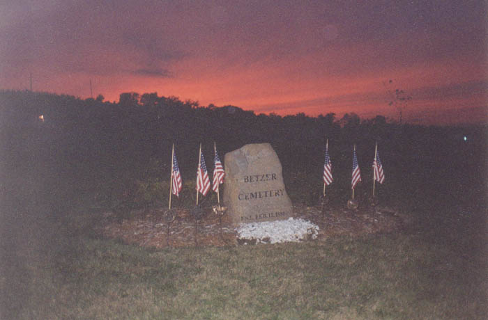
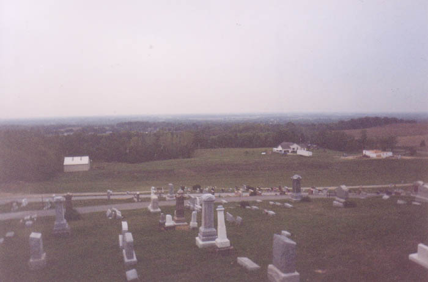
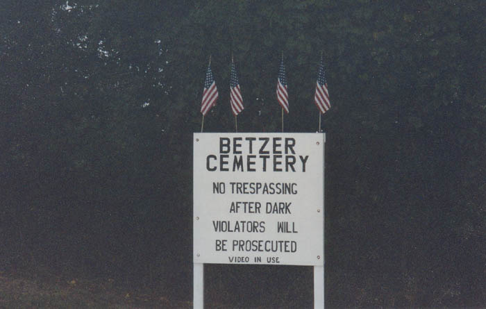
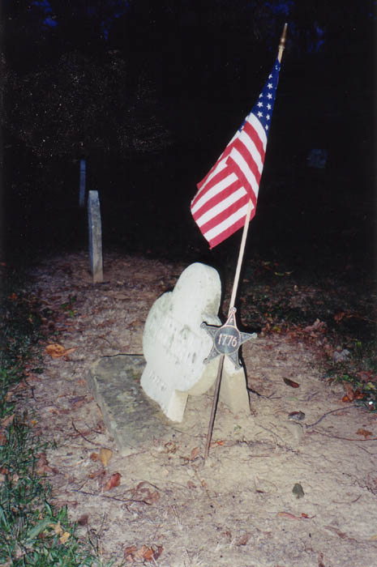
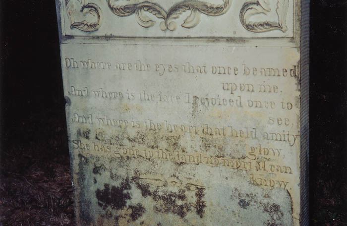

The most popular makeout spot between Columbus and Lancaster has to be Betzer Cemetery on Pickerington Road. Most teenagers in the area have at least heard of the cemetery often referred to as the Top of the World, from which you are able to see for miles and miles in an otherwise non-hilly portion of the state. I envisioned a cliff like the ones above Los Angeles. When Katydid showed me the place I found out that there's no cliff or canyon, but the comparison isn't far off.

The view from the high point of the cemetery, which is built on a gently sloping hill on Pickerington Road, is definitely worth the trip. The photo above shows it at dusk, which is a good time to be there. At night you can look at the lights--nothing like LA, but at least something. In the daytime you really can see for miles.

Because of Betzer Cemetery's reputation as a great place to hang out and do bad things like drink or smoke pot, it's begun to get a lot of attention from local police and property owners. A sign nearby warns of the risks if you get caught there after dark. And in the daytime you're likely to run into someone else enjoying the view.
It's easy to get caught up in the view and forget that there is a historic cemetery here. Pickerington Road bisects the graveyard, separating it into the part on the hill and the part down below. There are several old graves on the hill, but the really interesting ones are located in the less-visited section.

Veterans from the Revolutionary War and the War of 1812 are buried in Betzer Cemetery beneath stones worn nearly smooth over the years. A lot of the thin old stones have been snapped off and are simply propped up or laid in piles. A few of the bigger monuments have actually been replaced by steel duplicates which are a subtly unusual shade of blue-gray. I wonder who pays to have that sort of thing done.

Above you see one of the most interesting inscriptions. It says: OH WHERE ARE THE EYES THAT ONCE BEAMED UPON ME, / AND WHERE IS THE FACE I REJOICED ONCE TO SEE, / AND WHERE IS THE HEART THAT HELD AMITY GLOW, / SHE HAS GONE TO THE LAND NO MORTAL CAN KNOW. There has to be a sad story behind this one.
Betzer Cemetery, a.k.a. Top of the World, is located south of Route 33 on Pickerington Road, just past Lockville, in Fairfield County. If you decide to go at night, be sure to be careful with your car.
Grave Addiction: Betzer Cemetery
Back
forgottenohio@yahoo.com